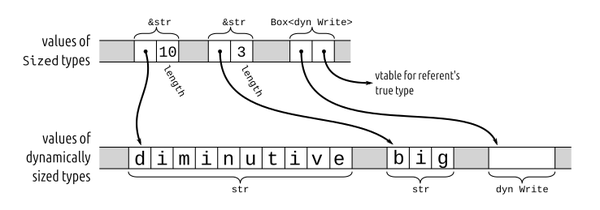

Science is nothing else than the search to discover unity in the wild variety of nature—or, more exactly, in the variety of our experience. Poetry, painting, the arts are the same search, in Coleridge’s phrase, for unity in variety.
Jacob Bronowski
This chapter describes what we call Rust’s “utility” traits, a grab bag of traits from the standard library that have a significant impact on the way Rust is written. You’ll need to be familiar with them in order to write idiomatic code and design public interfaces for your crates that users will judge to be properly “Rustic.”
Some of these traits are built into the Rust language. For example, a type that implements the Drop trait has a special method that Rust calls automatically whenever a value is dropped. This is critical for types that own heap memory (String, Vec) or system resources (File, TcpStream). Similarly, the Deref trait allows smart pointer types to “look and feel” like references, reducing boilerplate every time you use a Box or Rc. The Rust compiler knows about these traits and uses them implicitly.
Others, like the Default trait and Rust’s many conversion traits, have no magical compiler integration. You could define an equivalent trait in your own code. But they serve the important goal of setting down conventional solutions for common problems. These are especially valuable in public interfaces: by reducing needless variation, they make interfaces easier to understand, but they also increase the likelihood that features from different crates can simply be plugged together directly, without boilerplate or custom glue code.
Table 13-1 summarizes the traits covered in this chapter.
| Trait | Description |
|---|---|
Drop |
Types with destructors: cleanup code that Rust runs automatically whenever a value is dropped. |
Sized |
Types whose values have a fixed size, known at compile time, as opposed to dynamically sized types like [u8], str, and dyn Write. |
Clone |
Types whose values can be cloned. |
Copy |
Types whose values can be cloned simply by making a byte-for-byte copy of the memory containing the value. |
Deref and DerefMut |
Traits for smart pointer types. |
Default |
Types that have a sensible “default value.” |
AsRef and AsMut |
Conversion traits for borrowing one type of reference from another. |
Borrow and BorrowMut |
Conversion traits, like AsRef/AsMut, but additionally guaranteeing consistent hashing, ordering, and equality. |
From and Into |
Conversion traits for transforming one type of value into another. |
TryFrom and TryInto |
Conversion traits for transforming one type of value into another, for transformations that might fail. |
ToOwned |
Conversion trait for converting a reference to an owned value. |
There are other important standard library traits as well. We’ll cover Iterator and IntoIterator in Chapter 15. The Hash trait, for computing hash codes, is covered in Chapter 16. And a pair of traits that mark thread-safe types, Send and Sync, are covered in Chapter 19.
When a value’s owner goes away, we say that Rust drops the value. Dropping a value entails freeing whatever other values, heap storage, and system resources the value owns. Drops occur under a variety of circumstances: when a variable goes out of scope; at the end of an expression statement; when you truncate a vector, removing elements from its end; and so on.
For the most part, Rust handles dropping values for you automatically. For example, suppose you define the following type:
structAppellation{name:String,nicknames:Vec<String>,}
An Appellation owns heap storage for the strings’ contents and the vector’s buffer of elements. Rust takes care of cleaning all that up whenever an Appellation is dropped, without any further coding necessary on your part. However, if you want, you can customize how Rust drops values of your type by implementing the std::ops::Drop trait:
traitDrop{fndrop(&mutself);}
An implementation of Drop is analogous to a destructor in C++, or a finalizer in other languages. When a value is dropped, if it implements std::ops::Drop, Rust calls its drop method, before proceeding to drop whatever values its fields or elements own, as it normally would. This implicit invocation of drop is the only way to call that method; if you try to invoke it explicitly yourself, Rust flags that as an error.
Because Rust calls Drop::drop on a value before dropping its fields or elements, the value the method receives is always still fully initialized. An implementation of Drop for our Appellation type can make full use of its fields:
implDropforAppellation{fndrop(&mutself){print!("Dropping {}",self.name);if!self.nicknames.is_empty(){print!(" (AKA {})",self.nicknames.join(", "));}println!();}}
Given that implementation, we can write the following:
{letmuta=Appellation{name:"Zeus".to_string(),nicknames:vec!["cloud collector".to_string(),"king of the gods".to_string(),],};println!("before assignment");a=Appellation{name:"Hera".to_string(),nicknames:vec![],};println!("at end of block");}
When we assign the second Appellation to a, the first is dropped, and when we leave the scope of a, the second is dropped. This code prints the following:
before assignmentDropping Zeus (AKA cloud collector, king of the gods)at end of blockDropping Hera
Since our std::ops::Drop implementation for Appellation does nothing but print a message, how, exactly, does its memory get cleaned up? The Vec type implements Drop, dropping each of its elements and then freeing the heap-allocated buffer they occupied. A String uses a Vec<u8> internally to hold its text, so String need not implement Drop itself; it lets its Vec take care of freeing the characters. The same principle extends to Appellation values: when one gets dropped, in the end it is Vec’s implementation of Drop that actually takes care of freeing each of the strings’ contents, and finally freeing the buffer holding the vector’s elements. As for the memory that holds the Appellation value itself, it too has some owner, perhaps a local variable or some data structure, which is responsible for freeing it.
If a variable’s value gets moved elsewhere, so that the variable is uninitialized when it goes out of scope, then Rust will not try to drop that variable: there is no value in it to drop.
This principle holds even when a variable may or may not have had its value moved away, depending on the flow of control. In cases like this, Rust keeps track of the variable’s state with an invisible flag indicating whether the variable’s value needs to be dropped or not:
letp;{letq=Appellation{name:"Cardamine hirsuta".to_string(),nicknames:vec!["shotweed".to_string(),"bittercress".to_string(),],};ifcomplicated_condition(){p=q;}}println!("Sproing! What was that?");
Depending on whether complicated_condition returns true or false, either p or q will end up owning the Appellation, with the other uninitialized. Where it lands determines whether it is dropped before or after the println!, since q goes out of scope before the println!, and p after. Although a value may be moved from place to place, Rust drops it only once.
You usually won’t need to implement std::ops::Drop unless you’re defining a type that owns resources Rust doesn’t already know about. For example, on Unix systems, Rust’s standard library uses the following type internally to represent an operating system file descriptor:
structFileDesc{fd:c_int,}
The fd field of a FileDesc is simply the number of the file descriptor that should be closed when the program is done with it; c_int is an alias for i32. The standard library implements Drop for FileDesc as follows:
implDropforFileDesc{fndrop(&mutself){let_=unsafe{libc::close(self.fd)};}}
Here, libc::close is the Rust name for the C library’s close function. Rust code may call C functions only within unsafe blocks, so the library uses one here.
If a type implements Drop, it cannot implement the Copy trait. If a type is Copy, that means that simple byte-for-byte duplication is sufficient to produce an independent copy of the value. But it is typically a mistake to call the same drop method more than once on the same data.
The standard prelude includes a function to drop a value, drop, but its definition is anything but magical:
fndrop<T>(_x:T){}
In other words, it receives its argument by value, taking ownership from the caller—and then does nothing with it. Rust drops the value of _x when it goes out of scope, as it would for any other variable.
A fixed-size type is one whose values all have the same size in memory. Almost all types in Rust are fixed-size: every u64 takes eight bytes, every (f32, f32, f32) tuple twelve. Even enums have a fixed size: no matter which variant is actually present, an enum always occupies enough space to hold its largest variant. And although a Vec<T> owns a heap-allocated buffer whose size can vary, the Vec value itself is a pointer to the buffer, its capacity, and its length, so Vec<T> has a fixed size.
All fixed-size types implement the std::marker::Sized trait, which has no methods or associated types. Rust implements it automatically for all types to which it applies; you can’t implement it yourself. The only use for Sized is as a bound for type variables: a bound like T: Sized requires T to be a type whose size is known at compile time. Traits of this sort are called marker traits, because the Rust language itself uses them to mark certain types as having characteristics of interest.
However, Rust also has a few dynamically sized types whose values are not all the same size. For example, the string slice type str (note, without an &) is dynamically sized. The string literals "diminutive" and "big" are references to str slices that occupy ten and three bytes. Both are shown in Figure 13-1. Array slice types like [T] (again, without an &) are dynamically sized, too: a shared reference like &[u8] can point to a [u8] slice of any size.

The other common kind of dynamically sized type in Rust is a dyn type, or trait object. As we explained in “Using dyn”, a dyn reference can refer to a value of any type that implements a given trait. For example, the types &dyn std::io::Write and Box<dyn std::io::Write> are pointers to some value that implements the Write trait. The referent might be a file or a network socket or some type of your own for which you have implemented Write. Since the set of types that implement Write is open-ended, the type dyn Write is dynamically sized; its values have various sizes.
A variable or argument can’t have a dynamically sized type. You can only deal with values of dynamically sized types through pointers like &str or Box<dyn Write>, which themselves are fixed-size. As shown in Figure 13-1, a pointer to a dynamically sized value is always a fat pointer, two words wide: a pointer to a slice also carries the slice’s length, and a pointer to a trait object also carries a vtable pointer.
Pointers to slices and pointers to trait objects are nicely symmetrical. In both cases, the type lacks information necessary to use it: Rust can’t index a [u8] without knowing its length, nor can it invoke a method on a dyn Write without knowing the actual type of the writer. And in both cases, the fat pointer fills in the information missing from the type, carrying a length or a vtable pointer. The omitted static information is replaced with dynamic information.
Since dynamically sized types are so limited, most generic type variables should be restricted to Sized types. In fact, this is necessary so often that it is the implicit default in Rust: if you write struct S<T> { ... }, Rust understands you to mean struct S<T: Sized> { ... }. If you do not want to constrain T this way, you must explicitly opt out, writing struct S<T: ?Sized> { ... }. The ?Sized syntax is specific to this case and means “not necessarily Sized.”
Marking a type parameter as T: ?Sized makes sense for generic code that always handles values of that type through references or other pointers. For example, if you write struct S<T: ?Sized> { b: Box<T> }, then Rust will allow you to write S<str> and S<dyn Write>, where the box becomes a fat pointer, as well as S<i32> and S<String>, where the box is an ordinary pointer.
The standard PartialEq trait is another example of generic code with a ?Sized bound:
traitPartialEq<Rhs=Self>whereRhs:?Sized,{fneq(&self,other:&Rhs)->bool;fnne(&self,other:&Rhs)->bool{!self.eq(other)}}
It’s possible for this trait to have Rhs: ?Sized because every use of Rhs is by reference. It’s desirable because it means dynamically sized types like str can support the == operator.
Despite their restrictions, dynamically sized types make Rust’s type system work more smoothly. Reading the standard library documentation, you will occasionally come across a ?Sized bound on a type variable; this almost always means that the given type is only pointed to, and allows the associated code to work with slices and trait objects as well as ordinary values. When a type variable has the ?Sized bound, people often say it is questionably sized: it might be Sized, or it might not.
Aside from slices and trait objects, there is one more kind of dynamically sized type. A struct type’s last field (but only its last) may be dynamically sized, and such a struct is itself dynamically sized. For example, an Rc<T> reference-counted pointer is implemented internally as a pointer to the private type RcBox<T>, which stores the reference count alongside the T. Here’s a simplified definition of RcBox:
structRcBox<T:?Sized>{ref_count:usize,value:T,}
The value field is the T to which Rc<T> is counting references; Rc<T> dereferences to a pointer to this field. The ref_count field holds the reference count.
The real RcBox is just an implementation detail of the standard library and isn’t available for public use. But suppose we are working with the preceding definition. You can use this RcBox with Sized types, like RcBox<String>; the result is a Sized struct type. Or you can use it with dynamically sized types, like RcBox<dyn std::fmt::Display> (where Display is the trait for types that can be formatted by println! and similar macros); RcBox<dyn Display> is a dynamically sized struct type.
You can’t build an RcBox<dyn Display> value directly. Instead, you first need to create an ordinary, fixed-size RcBox whose value type implements Display, like RcBox<String>. Rust then lets you convert a reference &RcBox<String> to a fat reference &RcBox<dyn Display>:
letboxed_lunch:RcBox<String>=RcBox{ref_count:1,value:"lunch".to_string(),};usestd::fmt::Display;letboxed_displayable:&RcBox<dynDisplay>=&boxed_lunch;
This conversion happens implicitly when passing values to functions, so you can pass a &RcBox<String> to a function that expects a &RcBox<dyn Display>:
fndisplay(boxed:&RcBox<dynDisplay>){println!("For your enjoyment: {}",&boxed.value);}display(&boxed_lunch);
This would produce the following output:
For your enjoyment: lunch
The std::clone::Clone trait is for types that can make copies of themselves. Clone is defined as follows:
traitClone:Sized{fnclone(&self)->Self;fnclone_from(&mutself,source:&Self){*self=source.clone();}}
The clone method should construct an independent copy of self and return it. Since this method’s return type is Self and functions may not return dynamically sized types, the Clone trait itself extends the Sized trait: this has the effect of bounding implementations’ Self types to be Sized.
Cloning a value usually entails allocating copies of anything it owns, as well, so a clone can be expensive, in both time and memory. For example, cloning a Vec<String> not only copies the vector, but also copies each of its String elements. This is why Rust doesn’t just clone values automatically, but instead requires you to make an explicit method call. The reference-counted pointer types like Rc<T> and Arc<T> are exceptions: cloning one of these simply increments the reference count and hands you a new pointer.
The clone_from method modifies self into a copy of source. The default definition of clone_from simply clones source and then moves that into *self. This always works, but for some types, there is a faster way to get the same effect. For example, suppose s and t are Strings. The statement s = t.clone(); must clone t, drop the old value of s, and then move the cloned value into s; that’s one heap allocation and one heap deallocation. But if the heap buffer belonging to the original s has enough capacity to hold t’s contents, no allocation or deallocation is necessary: you can simply copy t’s text into s’s buffer and adjust the length. In generic code, you should use clone_from whenever possible to take advantage of optimized implementations when present.
If your Clone implementation simply applies clone to each field of your type and then constructs a new value from those clones, and the default definition of clone_from is good enough, then Rust will implement that for you: simply put #[derive(Clone)] above your type definition.
Pretty much every type in the standard library that makes sense to copy implements Clone. Primitive types like bool and i32 do. Container types like String, Vec<T>, and HashMap do, too. Some types don’t make sense to copy, like std::sync::Mutex; those don’t implement Clone. Some types like std::fs::File can be copied, but the copy might fail if the operating system doesn’t have the necessary resources; these types don’t implement Clone, since clone must be infallible. Instead, std::fs::File provides a try_clone method, which returns a std::io::Result<File>, which can report a failure.
In Chapter 4, we explained that, for most types, assignment moves values, rather than copying them. Moving values makes it much simpler to track the resources they own. But in “Copy Types: The Exception to Moves”, we pointed out the exception: simple types that don’t own any resources can be Copy types, where assignment makes a copy of the source, rather than moving the value and leaving the source uninitialized.
At that time, we left it vague exactly what Copy was, but now we can tell you: a type is Copy if it implements the std::marker::Copy marker trait, which is defined as follows:
traitCopy:Clone{}
This is certainly easy to implement for your own types:
implCopyforMyType{}
But because Copy is a marker trait with special meaning to the language, Rust permits a type to implement Copy only if a shallow byte-for-byte copy is all it needs. Types that own any other resources, like heap buffers or operating system handles, cannot implement Copy.
Any type that implements the Drop trait cannot be Copy. Rust presumes that if a type needs special cleanup code, it must also require special copying code and thus can’t be Copy.
As with Clone, you can ask Rust to derive Copy for you, using #[derive(Copy)]. You will often see both derived at once, with #[derive(Copy, Clone)].
Think carefully before making a type Copy. Although doing so makes the type easier to use, it places heavy restrictions on its implementation. Implicit copies can also be expensive. We explain these factors in detail in “Copy Types: The Exception to Moves”.
You can specify how dereferencing operators like * and . behave on your types by implementing the std::ops::Deref and std::ops::DerefMut traits. Pointer types like Box<T> and Rc<T> implement these traits so that they can behave as Rust’s built-in pointer types do. For example, if you have a Box<Complex> value b, then *b refers to the Complex value that b points to, and b.re refers to its real component. If the context assigns or borrows a mutable reference to the referent, Rust uses the DerefMut (“dereference mutably”) trait; otherwise, read-only access is enough, and it uses Deref.
The traits are defined like this:
traitDeref{typeTarget:?Sized;fnderef(&self)->&Self::Target;}traitDerefMut:Deref{fnderef_mut(&mutself)->&mutSelf::Target;}
The deref and deref_mut methods take self by reference and return a reference to a Self::Target. The type Target should be something that Self contains, owns, or refers to: for Box<Complex> the Target type is Complex. Note that DerefMut extends Deref: if you can dereference something and modify it, certainly you should be able to borrow a shared reference to it as well. Since the methods return a reference with the same lifetime as &self, self remains borrowed for as long as the returned reference lives.
The Deref and DerefMut traits play another role as well. Since deref takes a &Self reference and returns a &Self::Target reference, Rust uses this to automatically convert references of the former type into the latter. In other words, if inserting a deref call would prevent a type mismatch, Rust inserts one for you. Implementing DerefMut enables the corresponding conversion for mutable references. These are called the deref coercions: one type is being “coerced” into behaving as another.
Although the deref coercions aren’t anything you couldn’t write out explicitly yourself, they’re convenient:
If you have some Rc<String> value r and want to apply String::find to it, you can simply write r.find('?'), instead of (*r).find('?'): the method call implicitly borrows r, and &Rc<String> coerces to &String, because Rc<T> implements Deref<Target = T>.
You can use methods like split_at on String values, even though split_at is a method of the str slice type, because String implements Deref<Target = str>. There’s no need for String to reimplement all of str’s methods, since you can coerce a &str from a &String.
If you have a vector of bytes v and you want to pass it to a function that expects a byte slice &[u8], you can simply pass &v as the argument, since Vec<T> implements Deref<Target = [T]>.
Rust will apply several deref coercions in succession if necessary. For example, using the coercions mentioned before, you can apply split_at directly to an Rc<String>, since &Rc<String> dereferences to &String, which dereferences to &str, which has the split_at method.
For example, suppose you have the following type:
structSelector<T>{/// Elements available in this `Selector`.elements:Vec<T>,/// The index of the "current" element in `elements`. A `Selector`/// behaves like a pointer to the current element.current:usize,}
To make the Selector behave as the doc comment claims, you must implement Deref and DerefMut for the type:
usestd::ops::{Deref,DerefMut};impl<T>DerefforSelector<T>{typeTarget=T;fnderef(&self)->&T{&self.elements[self.current]}}impl<T>DerefMutforSelector<T>{fnderef_mut(&mutself)->&mutT{&mutself.elements[self.current]}}
Given those implementations, you can use a Selector like this:
letmuts=Selector{elements:vec!['x','y','z'],current:2,};// Because `Selector` implements `Deref`, we can use the `*` operator to// refer to its current element.assert_eq!(*s,'z');// Assert that 'z' is alphabetic, using a method of `char` directly on a// `Selector`, via deref coercion.assert!(s.is_alphabetic());// Change the 'z' to a 'w', by assigning to the `Selector`'s referent.*s='w';assert_eq!(s.elements,['x','y','w']);
The Deref and DerefMut traits are designed for implementing smart pointer types, like Box, Rc, and Arc, and types that serve as owning versions of something you would also frequently use by reference, the way Vec<T> and String serve as owning versions of [T] and str. You should not implement Deref and DerefMut for a type just to make the Target type’s methods appear on it automatically, the way a C++ base class’s methods are visible on a subclass. This will not always work as you expect and can be confusing when it goes awry.
The deref coercions come with a caveat that can cause some confusion: Rust applies them to resolve type conflicts, but not to satisfy bounds on type variables. For example, the following code works fine:
lets=Selector{elements:vec!["good","bad","ugly"],current:2,};fnshow_it(thing:&str){println!("{thing}");}show_it(&s);
In the call show_it(&s), Rust sees an argument of type &Selector<&str> and a parameter of type &str, finds the Deref<Target = str> implementation, and rewrites the call as show_it(s.deref()), just as needed.
However, if you change show_it into a generic function, Rust is suddenly no longer cooperative:
usestd::fmt::Display;fnshow_generic<T:Display>(thing:T){println!("{thing}");}show_generic(&s);
Rust complains:
error: `Selector<&str>` doesn't implement `std::fmt::Display`|41 | show_generic(&s);| ------------ ^ unsatisfied trait bound| || required by a bound introduced by this call|help: the trait `std::fmt::Display` is not implemented for `Selector<&str>`|7 | struct Selector<T> {| ^^^^^^^^^^^^^^^^^^= note: required for `&Selector<&str>` to implement `std::fmt::Display`note: required by a bound in `show_generic`|35 | fn show_generic<T: Display>(thing: T) {| ^^^^^^^ required by this bound in `show_generic`help: consider dereferencing here|41 | show_generic(&*s);| +
This can be bewildering: How could making a function generic introduce an error? True, Selector<&str> does not implement Display itself, but it dereferences to &str, which certainly does.
Since you’re passing an argument of type &Selector<&str> and the function’s parameter type is &T, the type variable T must be Selector<&str>. Then, Rust checks whether the bound T: Display is satisfied: since it does not apply deref coercions to satisfy bounds on type variables, this check fails.
To work around this problem, you can spell out the coercion using the as operator:
show_it_generic(&sas&str);
Or, as the compiler suggests, you can force the coercion with &*:
show_it_generic(&*s);
Some types have a reasonably obvious default value: the default vector or string is empty, the default number is zero, the default Option is None, and so on. Types like this can implement the std::default::Default trait:
traitDefault{fndefault()->Self;}
The default method simply returns a fresh value of type Self. String’s implementation of Default is straightforward:
implDefaultforString{fndefault()->String{String::new()}}
All of Rust’s collection types—Vec, HashMap, BinaryHeap, and so on—implement Default, with default methods that return an empty collection. This is helpful when you need to build a collection of values but want to let your caller decide exactly what sort of collection to build. For example, the Iterator trait’s partition method splits the values the iterator produces into two collections, using a closure to decide where each value goes:
usestd::collections::HashSet;letsquares=[4,9,16,25,36,49,64];let(powers_of_two,impure):(HashSet<i32>,HashSet<i32>)=squares.iter().partition(|&n|n&(n-1)==0);assert_eq!(powers_of_two.len(),3);assert_eq!(impure.len(),4);
The closure |&n| n & (n-1) == 0 uses some bit fiddling to recognize numbers that are powers of two, and partition uses that to produce two HashSets. But of course, partition isn’t specific to HashSets; you can use it to produce any sort of collection you like, as long as the collection type implements Default, to produce an empty collection to start with, and Extend<T>, to add a T to the collection. String implements Default and Extend<char>, so you can write:
let(upper,lower):(String,String)="Great Teacher Onizuka".chars().partition(|&c|c.is_uppercase());assert_eq!(upper,"GTO");assert_eq!(lower,"reat eacher nizuka");
Another common use of Default is to produce default values for structs that represent a large collection of parameters, most of which you won’t usually need to change. For example, the glium crate provides Rust bindings for the powerful and complex OpenGL graphics library. The glium::DrawParameters struct includes 24 fields, each controlling a different detail of how OpenGL should render some bit of graphics. The glium draw function expects a DrawParameters struct as an argument. Since DrawParameters implements Default, you can create one to pass to draw, mentioning only those fields you want to change:
letparams=glium::DrawParameters{line_width:Some(0.02),point_size:Some(0.02),..Default::default()};target.draw(...,¶ms).unwrap();
This calls Default::default() to create a DrawParameters value initialized with the default values for all its fields and then uses the .. syntax for structs to create a new one with the line_width and point_size fields changed, ready for you to pass it to target.draw.
If a type T implements Default, then the standard library implements Default automatically for Rc<T>, Arc<T>, Box<T>, Cell<T>, RefCell<T>, Cow<T>, Mutex<T>, and RwLock<T>. The default value for the type Rc<T>, for example, is an Rc pointing to the default value for type T.
If all the field types of a tuple type implement Default, then the tuple type does too, defaulting to a tuple holding each field’s default value.
Rust does not implicitly implement Default for struct types, but if all of a struct’s fields implement Default, you can implement Default for the struct automatically using #[derive(Default)].
You can automatically implement Default for enum types with #[derive(Default)] too, by marking the default variant with #[default]:
#[derive(Default)]enumBackground{#[default]Empty,Color(Color),Image(PathBuf),}
If the default variant has any fields, they must also implement Default.
When a type implements AsRef<T>, that means you can borrow a &T from it efficiently. AsMut is the analogue for mutable references. Their definitions are as follows:
traitAsRef<T:?Sized>{fnas_ref(&self)->&T;}traitAsMut<T:?Sized>{fnas_mut(&mutself)->&mutT;}
So, for example, Vec<T> implements AsRef<[T]>, and String implements AsRef<str>. You can also borrow a String’s contents as an array of bytes, so String implements AsRef<[u8]> as well.
AsRef is typically used to make functions more flexible in the argument types they accept. For example, the std::fs::File::open function is declared like this:
fnopen<P:AsRef<Path>>(path:P)->Result<File>
What open really wants is a &Path, the type representing a filesystem path. But with this signature, open accepts anything it can borrow a &Path from—that is, anything that implements AsRef<Path>. Such types include String and str, the operating system interface string types OsString and OsStr, and of course PathBuf and Path; see the library documentation for the full list. This is what allows you to pass string literals to open:
letdot_emacs=std::fs::File::open("/home/jimb/.emacs")?;
All of the standard library’s filesystem access functions accept path arguments this way. For callers, the effect resembles that of an overloaded function in C++, although Rust takes a different approach toward establishing which argument types are acceptable.
But this can’t be the whole story. A string literal is a &str, but the type that implements AsRef<Path> is str, without an &. And as we explained in “Deref and DerefMut”, Rust doesn’t try deref coercions to satisfy type variable bounds, so they won’t help here either.
Fortunately, the standard library includes the blanket implementation:
impl<T,U>AsRef<U>for&TwhereT:AsRef<U>+?Sized,U:?Sized,{fnas_ref(&self)->&U{(*self).as_ref()}}
In other words, for any types T and U, if T: AsRef<U>, then &T: AsRef<U> as well: simply follow the reference and proceed as before. In particular, since str: AsRef<Path>, then &str: AsRef<Path> as well. In a sense, this is a way to get a limited form of deref coercion in checking AsRef bounds on type variables.
You might assume that if a type implements AsRef<T>, it should also implement AsMut<T>. However, there are cases where this isn’t appropriate. For example, we’ve mentioned that String implements AsRef<[u8]>; this makes sense, as each String certainly has a buffer of bytes that can be useful to access as binary data. However, String further guarantees that those bytes are a well-formed UTF-8 encoding of Unicode text; if String implemented AsMut<[u8]>, that would let callers change the String’s bytes to anything they wanted, and you could no longer trust a String to be well-formed UTF-8. It only makes sense for a type to implement AsMut<T> if modifying the given T cannot violate the type’s invariants.
Although AsRef and AsMut are pretty simple, providing standard, generic traits for reference conversion avoids the proliferation of more specific conversion traits. You should avoid defining your own AsFoo traits when you could just implement AsRef<Foo>.
The std::borrow::Borrow trait is similar to AsRef: if a type implements Borrow<T>, then its borrow method efficiently borrows a &T from it. But Borrow imposes more restrictions: a type should implement Borrow<T> only when a &T hashes and compares the same way as the value it’s borrowed from. (Rust doesn’t enforce this; it’s just the documented intent of the trait.) This makes Borrow valuable in dealing with keys in hash tables and trees or when dealing with values that will be hashed or compared for some other reason.
This distinction matters when borrowing from Strings, for example: String implements AsRef<str>, AsRef<[u8]>, and AsRef<Path>, but those three target types will generally have different hash values. Only the &str slice is guaranteed to hash like the equivalent String, so String implements only Borrow<str>.
Borrow’s definition is identical to that of AsRef; only the names have been changed:
traitBorrow<Borrowed:?Sized>{fnborrow(&self)->&Borrowed;}
Borrow is designed to address a specific situation with generic hash tables and other associative collection types. For example, suppose you have a std::collections::HashMap<String, i32>, mapping strings to numbers. This table’s keys are Strings; each entry owns one. What should the signature of the method that looks up an entry in this table be? Here’s a first attempt:
impl<K,V>HashMap<K,V>whereK:Eq+Hash,{fnget(&self,key:K)->Option<&V>{...}}
This makes sense: to look up an entry, you must provide a key of the appropriate type for the table. But in this case, K is String; this signature would force you to pass a String by value to every call to get, which is clearly wasteful. You really just need a reference to the key:
impl<K,V>HashMap<K,V>whereK:Eq+Hash,{fnget(&self,key:&K)->Option<&V>{...}}
This is slightly better, but now you have to pass the key as a &String, so if you wanted to look up a constant string, you’d have to write:
hashtable.get(&"twenty-two".to_string())
This is ridiculous: it allocates a String buffer in the heap and copies the text into it, just so it can borrow it as a &String, pass it to get, and then drop it.
It should be good enough to pass anything that can be hashed and compared with our key type; a &str should be perfectly adequate, for example. So here’s the final iteration, which is what you’ll find in the standard library:
impl<K,V>HashMap<K,V>whereK:Eq+Hash,{fnget<Q>(&self,key:&Q)->Option<&V>whereK:Borrow<Q>,Q:Eq+Hash+?Sized,{...}}
In other words, if you can borrow an entry’s key as a &Q and the resulting reference hashes and compares just the way the key itself would, then clearly &Q ought to be an acceptable key type. Since String implements Borrow<str> and Borrow<String>, this final version of get allows you to pass either &String or &str as a key, as needed.
Vec<T> and [T; N] implement Borrow<[T]>. Every string-like type allows borrowing its corresponding slice type: String implements Borrow<str>, PathBuf implements Borrow<Path>, and so on. And all the standard library’s associative collection types use Borrow to decide which types can be passed to their lookup functions.
The standard library includes a blanket implementation so that every type T can be borrowed from itself: T: Borrow<T>. This ensures that &K is always an acceptable type for looking up entries in a HashMap<K, V>.
As a convenience, every &mut T type also implements Borrow<T>, returning a shared reference &T as usual. This allows you to pass mutable references to collection lookup functions without having to reborrow a shared reference, emulating Rust’s usual implicit coercion from mutable references to shared references.
The BorrowMut trait is the analogue of Borrow for mutable references:
traitBorrowMut<Borrowed:?Sized>:Borrow<Borrowed>{fnborrow_mut(&mutself)->&mutBorrowed;}
The same expectations described for Borrow apply to BorrowMut as well.
The std::convert::From and std::convert::Into traits represent conversions that consume a value of one type and return a value of another. Whereas the AsRef and AsMut traits borrow a reference of one type from another, From and Into take ownership of their argument, transform it, and then return ownership of the result back to the caller.
Their definitions are nicely symmetrical:
traitInto<T>:Sized{fninto(self)->T;}traitFrom<T>:Sized{fnfrom(other:T)->Self;}
The standard library automatically implements the trivial conversion from each type to itself: every type T implements From<T> and Into<T>.
Although the traits simply provide two ways to do the same thing, they lend themselves to different uses.
You generally use Into to make your functions more flexible in the arguments they accept. For example, if you write:
usestd::net::Ipv4Addr;fnping<A>(address:A)->std::io::Result<bool>whereA:Into<Ipv4Addr>,{letipv4_address=address.into();...}
then ping can accept not just an Ipv4Addr as an argument, but also a u32 or a [u8; 4] array, since those types both conveniently happen to implement Into<Ipv4Addr>. (It’s sometimes useful to treat an IPv4 address as a single 32-bit value, or an array of 4 bytes.) Because the only thing ping knows about address is that it implements Into<Ipv4Addr>, there’s no need to specify which type you want when you call into; there’s only one that could possibly work, so type inference fills it in for you.
As with AsRef in the previous section, the effect is much like that of overloading a function in C++. With the definition of ping from before, we can make any of these calls:
println!("{:?}",ping(Ipv4Addr::new(23,21,68,141)));// pass an Ipv4Addrprintln!("{:?}",ping([66,146,219,98]));// pass a [u8; 4]println!("{:?}",ping(0xd076eb94_u32));// pass a u32
The From trait, however, plays a different role. The from method serves as a generic constructor for producing an instance of a type from some other single value. For example, rather than Ipv4Addr having two methods named from_array and from_u32, it simply implements From<[u8;4]> and From<u32>, allowing us to write:
letaddr1=Ipv4Addr::from([66,146,219,98]);letaddr2=Ipv4Addr::from(0xd076eb94_u32);
We can let type inference sort out which implementation applies.
Given an appropriate From implementation, the standard library automatically implements the corresponding Into trait. When you define your own type, if it has single-argument constructors, you should write them as implementations of From<T> for the appropriate types; Rust already knows how to adapt your conversion code from From into Into.
Because the from and into conversion methods take ownership of their arguments, a conversion can reuse the original value’s resources to construct the converted value. For example, suppose you write:
lettext="Beautiful Soup".to_string();letbytes:Vec<u8>=text.into();
The implementation of Into<Vec<u8>> for String simply takes the String’s heap buffer and repurposes it, unchanged, as the returned vector’s element buffer. The conversion has no need to allocate or copy the text. This is another case where moves enable efficient implementations.
These conversions also provide a nice way to relax a value of a constrained type into something more flexible, without weakening the constrained type’s guarantees. For example, a String guarantees that its contents are always valid UTF-8; its mutating methods are carefully restricted to ensure that nothing you can do will ever introduce bad UTF-8. But this example efficiently “demotes” a String to a block of plain bytes that you can do anything you like with: perhaps you’re going to compress it, or combine it with other binary data that isn’t UTF-8. Because into takes its argument by value, text is no longer initialized after the conversion, meaning that we can freely access the former String’s buffer without being able to corrupt any extant String.
However, cheap conversions are not part of Into and From’s contract. Whereas AsRef and AsMut conversions are expected to be cheap, From and Into conversions may allocate, copy, or otherwise process the value’s contents. For example, String implements From<&str>, which copies the string slice into a new heap-allocated buffer for the String. And std::collections::BinaryHeap<T> implements From<Vec<T>>, which compares and reorders the elements according to its algorithm’s requirements.
The ? operator uses From and Into to help clean up code in functions that could fail in multiple ways by automatically converting from specific error types to general ones when needed.
For instance, imagine a system that needs to read binary data and convert some portion of it from base-10 numbers written out as UTF-8 text. That means using str::from_utf8 and the FromStr implementation for i32, which can each return errors of different types. Assuming we use the anyhow::Error type described in Chapter 7, the ? operator will do the conversion for us:
fnparse_i32_bytes(b:&[u8])->anyhow::Result<i32>{Ok(str::from_utf8(b)?.parse::<i32>()?)}
Like most error types, Utf8Error and ParseIntError implement the std::error::Error trait, and anyhow gives us a blanket From impl for converting from anything that implements std::error::Error to an anyhow::Error, which ? automatically uses:
// (code from the `anyhow` crate)impl<E>From<E>forErrorwhereE:std::error::Error+Send+Sync+'static,{fnfrom(error:E)->Self{letbacktrace=...;Error::construct_from_std(error,backtrace)}}
This turns what would have been a fairly large function with two match statements into a one-liner.
Before From and Into were added to the standard library, Rust code was full of ad hoc conversion traits and construction methods, each specific to a single type. From and Into codify conventions that you can follow to make your types easier to use, since your users are already familiar with them. Other libraries and the language itself can also rely on these traits as a canonical, standardized way to encode conversions.
From and Into are infallible traits—their API requires that conversions will not fail. Unfortunately, many conversions are more complex than that. For example, large integers like i64 can store numbers far larger than i32, and converting a number like 2_000_000_000_000i64 into i32 doesn’t make much sense without some additional information. Doing a simple bitwise conversion, in which the first 32 bits are thrown out, doesn’t often yield the result we would hope for:
lethuge=2_000_000_000_000i64;letsmaller=hugeasi32;println!("{smaller}");// -1454759936
There are many options for handling this situation. Depending on the context, such a “wrapping” conversion might be appropriate. On the other hand, applications such as digital signal processing and control systems can often make do with a “saturating” conversion, in which numbers larger than the maximum possible value are limited to that maximum.
Since it’s not clear how such a conversion should behave, Rust doesn’t implement From<i64> for i32, or any other conversion between numerical types that would lose information. Instead, i32 implements TryFrom<i64>. TryFrom and TryInto are the fallible cousins of From and Into and are similarly reciprocal; implementing TryFrom means that TryInto is implemented as well.
Their definitions are only a little more complex than From and Into.
pubtraitTryFrom<T>:Sized{typeError;fntry_from(value:T)->Result<Self,Self::Error>;}pubtraitTryInto<T>:Sized{typeError;fntry_into(self)->Result<T,Self::Error>;}
The try_into() method gives us a Result, so we can choose what to do in the exceptional case, such as a number that’s too large to fit in the resulting type:
// Saturate on overflow, rather than wrappingletsmaller:i32=huge.try_into().unwrap_or(i32::MAX);
If we want to also handle the negative case, we can use the unwrap_or_else() method of Result:
letsmaller:i32=huge.try_into().unwrap_or_else(|_|{ifhuge>=0{i32::MAX}else{i32::MIN}});
Implementing fallible conversions for your own types is easy, too. The Error type can be as simple, or as complex, as a particular application demands. Here, the standard library uses an empty struct, providing no information beyond the fact that an error occurred, since the only possible error is an overflow. On the other hand, conversions between more complex types might want to return more information:
implTryInto<LinearShift>forTransform{typeError=TransformError;fntry_into(self)->Result<LinearShift,Self::Error>{if!self.normalized(){returnErr(TransformError::NotNormalized);}...}}
Where From and Into relate types with simple conversions, TryFrom and TryInto extend the simplicity of From and Into conversions with the expressive error handling afforded by Result. These four traits can be used together to relate many types in a single crate.
Given a reference, the usual way to produce an owned copy of its referent is to call clone, assuming the type implements std::clone::Clone. But what if you want to clone a &str or a &[i32]? What you probably want is a String or a Vec<i32>, but Clone’s definition doesn’t permit that: by definition, cloning a &T must always return a value of type T, and str and [u8] are dynamically sized; they aren’t even types that a function could return.
The std::borrow::ToOwned trait provides a slightly looser way to convert a reference to an owned value:
traitToOwned{typeOwned:Borrow<Self>;fnto_owned(&self)->Self::Owned;}
Unlike clone, which must return exactly Self, to_owned can return anything you could borrow a &Self from: the Owned type must implement Borrow<Self>. You can borrow a &[T] from a Vec<T>, so [T] can implement ToOwned<Owned = Vec<T>>, as long as T implements Clone, so that we can copy the slice’s elements into the vector. Similarly, str implements ToOwned<Owned = String>, Path implements ToOwned<Owned = PathBuf>, and so on.
Making good use of Rust involves thinking through questions of ownership, like whether a function should receive a parameter by reference or by value. Usually you can settle on one approach or the other, and the parameter’s type reflects your decision. But in some cases you cannot decide whether to borrow or own until the program is running; the std::borrow::Cow type (for “clone on write”) provides one way to do this.
Its definition is shown here:
enumCow<'a,B:?Sized>whereB:ToOwned,{Borrowed(&'aB),Owned(<BasToOwned>::Owned),}
A Cow<B> either borrows a shared reference to a B or owns a value from which we could borrow such a reference. Since Cow implements Deref, you can call methods on it as if it were a shared reference to a B: if it’s Owned, it borrows a shared reference to the owned value; and if it’s Borrowed, it just hands out the reference it’s holding.
You can also get a mutable reference to a Cow’s value by calling its to_mut method, which returns a &mut B. If the Cow happens to be Cow::Borrowed, to_mut simply calls the reference’s to_owned method to get its own copy of the referent, changes the Cow into a Cow::Owned, and borrows a mutable reference to the newly owned value. This is the “clone on write” behavior the type’s name refers to.
Similarly, Cow has an into_owned method that promotes the reference to an owned value, if necessary, and then returns it, moving ownership to the caller and consuming the Cow in the process.
One common use for Cow is to return either a statically allocated string constant or a computed string. For example, suppose you need to convert an error enum to a message. Most of the variants can be handled with fixed strings, but some of them have additional data that should be included in the message. You can return a Cow<'static, str>:
usestd::borrow::Cow;usestd::path::PathBuf;fndescribe(error:&Error)->Cow<'static,str>{match*error{Error::OutOfMemory=>"out of memory".into(),Error::StackOverflow=>"stack overflow".into(),Error::MachineOnFire=>"machine on fire".into(),Error::Unfathomable=>"machine bewildered".into(),Error::FileNotFound(refpath)=>{format!("file not found: {}",path.display()).into()}}}
This code uses Cow’s implementation of Into to construct the values. Most arms of this match statement return a Cow::Borrowed referring to a statically allocated string. But when we get a FileNotFound variant, we use format! to construct a message incorporating the given filename. This arm of the match statement produces a Cow::Owned value.
Callers of describe that don’t need to change the value can simply treat the Cow as a &str:
println!("Disaster has struck: {}",describe(&error));
Callers who do need an owned value can readily produce one:
letmutlog:Vec<String>=Vec::new();...log.push(describe(&error).into_owned());
Using Cow helps describe and its callers put off allocation until the moment it becomes necessary.